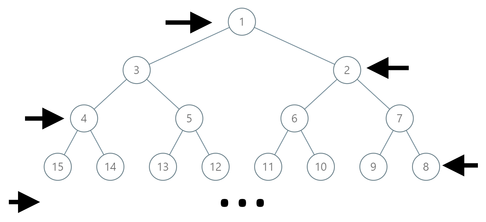

1104. 二叉树寻路
自叶向根：正树父结点是 label/2，之字形隔层反向，父结点 = 父层首尾和 − label/2。
思路
- 层深
d = floor(log2(label))；第 0、2、4…层从左往右编号，第 1、3、5…层从右往左编号。 - 结构上父结点的列号 = 结点列号 / 2。无论本层正反编号，统一公式：
父 = 3·2^(d−1) − 1 − label/2，即「父层首尾标号之和减去正树父结点」。 - 循环到根为止把
label依次收进答案，最后补根1并整体反转成根到叶顺序。
图解
最优解
1import java.util.*;2 3class Solution {4 public List<Integer> pathInZigZagTree(int label) {5 List<Integer> ans = new ArrayList<>();6 while (label > 1) {7 ans.add(label);8 int d = 31 - Integer.numberOfLeadingZeros(label); // label 所在层，根是第 0 层9 // 正树的父结点是 label/2；之字形隔层反向，父结点 = 父层首尾和 − label/210 label = 3 * (1 << (d - 1)) - 1 - label / 2;11 }12 ans.add(1);13 Collections.reverse(ans);14 return ans;15 }16}题目
在一棵无限的二叉树上，每个节点都有两个子节点，树中的节点 逐行 依次按 “之” 字形进行标记。
如下图所示，在奇数行（即，第一行、第三行、第五行……）中，按从左到右的顺序进行标记；
而偶数行（即，第二行、第四行、第六行……）中，按从右到左的顺序进行标记。

给你树上某一个节点的标号 label，请你返回从根节点到该标号为 label 节点的路径，该路径是由途经的节点标号所组成的。
示例 1：
输入：label = 14 输出：[1,3,4,14]
示例 2：
输入：label = 26 输出：[1,2,6,10,26]
提示：
1 <= label <= 10^6
题面取自力扣当前版本。
数据快照 2026-11-04。题面版权归力扣所有，本站点仅供本人学习使用，请勿对外发布。